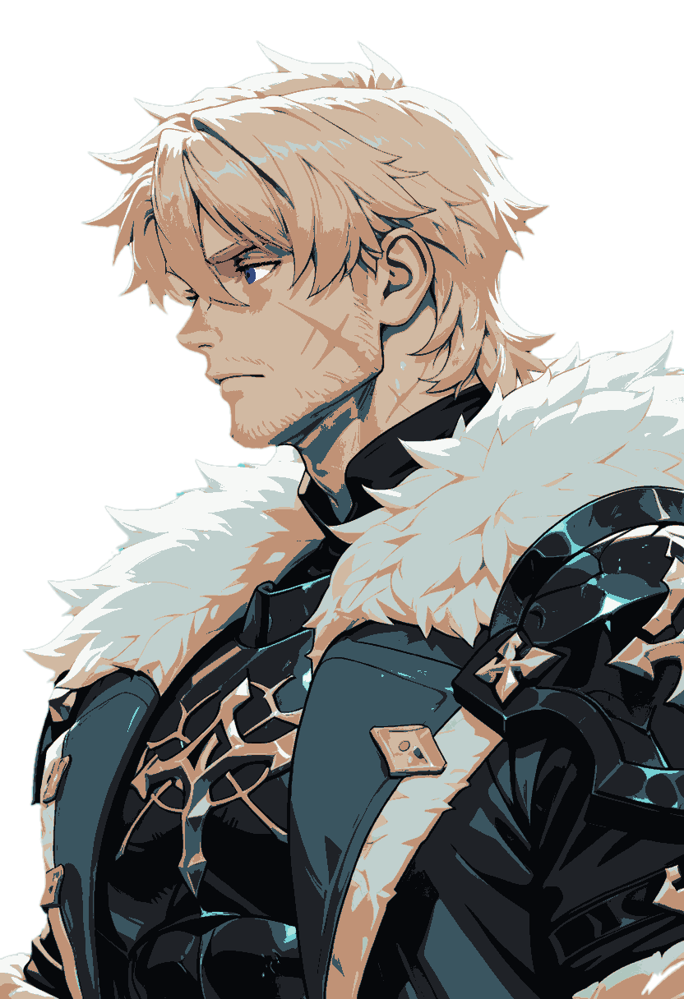
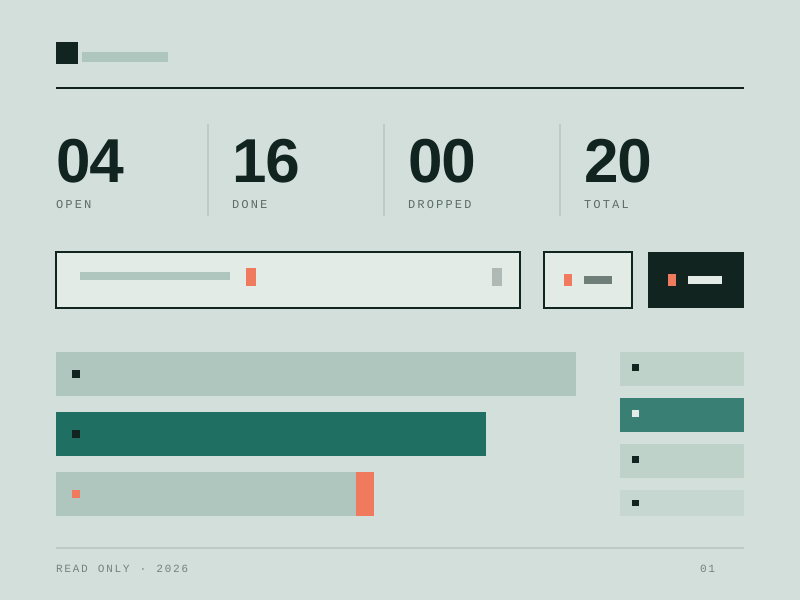
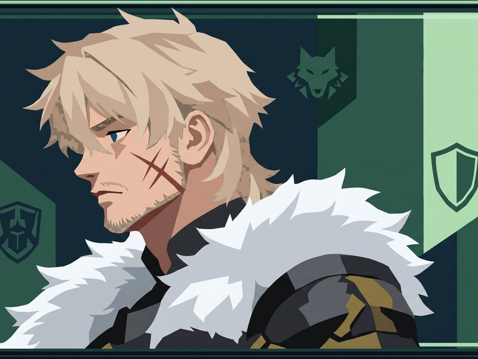

THINGS I MADE
个人档案 · 兴趣与 AI 作品 · Nº1
我是小七。用 AI 写点能跑的小工具，也攒些没什么用但很喜欢的东西。不追热点，想到才更新。

四件 · 2026

十几件事挤一本账，一眼看出哪件卡住
前端 · 工作流
不用 ssh，也知道它活着
系统监控 · 面板
把桌面工具塞进手机，白屏七次
移动端 · 适配

法尔伽组图
生图 · 练习
一个持续生长的清单
AI 是我的第二双手。
我是小七，不搞设计也不做学术。平时遇到烦人的重复活，就哄着模型写点脚本替我干；偶尔攒些没用的怪东西。这里没有进度表，也不背指标，东西能跑就算成功，跑不动就先放着。
还没有 · 等有真事再写
还没写。等真事发生再写。